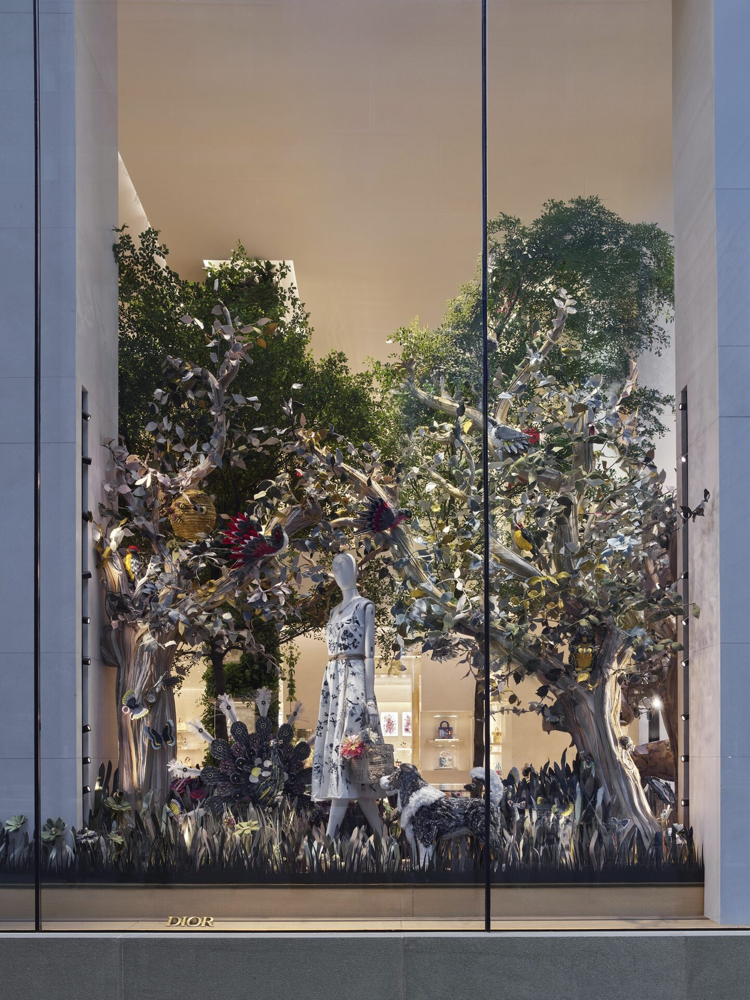

A new four-storey flagship on the Upper East Side, opened by Peter Marino with bees in the windows and a spa next door. The week before the Met, House of Dior New York is the building Manhattan keeps walking past on purpose.
The corner of 57th Street and Madison Avenue is doing a lot of work this week. The Met is staging Costume Art a few blocks north. The Carlyle is fully booked. Tom Ford, Sarabande, the Cunningham retrospective — the city is in one of its uniform moods, where even the cabbies seem to be running late on purpose. And on the southwest corner of 57th and Madison, where a small Dior boutique used to suffice, four storeys of Christian Dior have settled in.
House of Dior New York opened last summer and the buzz at the time was about the bees. Animatronic ones, in a window tableau by the design team, fashioned from upcycled house leathers and bouclés alongside squirrels, birds and a trompe-l’oeil forest. Charm is a Dior posture. The building’s real argument was always quieter: this is the largest Dior store in the United States, and the first piece of architecture in New York to lay out the house’s world in full.
Peter Marino’s fourth dimension
Peter Marino is responsible for nearly every Dior store of consequence built since the late 1990s, and the New York project is, even by his standards, vast. He took the original boutique and pushed sideways and upwards, annexing the first four floors of the building next door. The result is a flagship that occupies a full corner block, with a double-height entryway on 57th Street that reads as a kind of Madison Avenue cathedral — pale stone, glass, the cannage motif inscribed faintly into the wood parquet underfoot.
What makes the building feel like a building, rather than a list of boutiques stacked on top of each other, is the editorial rigour of its references. Almost everything is a quotation. The plant-covered column at the entry is by the Belgian landscape architect Peter Wirtz, the same designer who keeps the gardens in Granville on the right side of wild. A ginkgo-leaf bench by Claude Lalanne sits beneath it, recalling Lalanne’s long collaboration with Yves Saint Laurent and her quieter friendship with the Diors. Abstract florals by Jean-Michel Othoniel and Nir Hod hang in the salons. Bobby, Christian Dior’s beloved dog, gets his own perfume bottle and an upcycled cameo in the windows.

Photography by Jonathan Taylor / Wallpaper*
A boutique that decided to be a building
The maxim that runs through every Marino-Dior collaboration is that retail should never feel like retail, and on Madison Avenue the trick is to make commerce feel like residency. The first floor handles ready-to-wear and accessories. A double-height stair, with a banister of woven bronze, takes you up. Each subsequent floor narrows the brief: leather goods on one, Dior Beauté on another, haute couture and Very Important Client salons higher still. By the time you reach the top, you have stopped browsing and started visiting. The Carlyle is two avenues over. The atmosphere is the same.
Crucial to the project, and something that gives the building a clear American twist, is a stateside-first — a Dior Spa, with treatment rooms and the made-to-measure beauty rituals the maison has run in Paris for years. Patrons receive a wellness elixir laced with magnesium, a soft New York joke about how unrelaxed the city tends to keep its very-important-clients. A separate storefront next door houses the only dedicated Dior Maison shop in the United States, where ceramic vessels and woven baskets are decorated with even more bees. The bees, by now, are basically the building’s mascot.
Marino’s most considered move on Madison Avenue is to make a global maison feel small — the way a country house, no matter how grand, always feels smaller than the road outside.
Isabelle RoweOne block north, on Fifth Avenue, sits the building where Christian Dior opened his first Manhattan store in 1948. The new flagship leans heavily on that anniversary. A capsule of forty-seven pieces — J’Adior slingbacks, Lady Dior bags, B27 men’s sneakers — was made for the opening, exclusive to New York and to that single number. Forty-seven, of course, is the year Christian Dior founded the house. It is also the year he first looked at New York and decided he wanted in.
The spa on 57th
Photography by Jonathan Taylor / Wallpaper*
In Paris, the Dior Spa is part of the architecture of 30 Avenue Montaigne. New York gets a version that has been Anglicised in the most American way: the rooms are slightly larger, the protocols slightly faster, and the elixir is presented on a small cart rather than a tray. The treatments draw on the Capture Totale and Prestige lines, with a head-to-toe protocol the menu calls, with a straight face, the Dior Couture Ritual. A facial is two hours. A Couture Ritual is four. There is a small steam room, a hammam-style ablution chamber and a quiet lounge where the spa’s wellness team will, on application, walk you to your couture fitting one floor up.
Whether or not the magnesium does anything, the architecture of the spa — soft pinks, low ceilings, walls upholstered in the same toile de Jouy that wraps the Dior Maison textiles — is the most felt argument the building makes for itself. This is fashion on Madison Avenue trying, and quite obviously succeeding, to be a hotel.
The Met connection
It is not coincidence that the House of Dior New York is doing its busiest week of the year as Costume Art opens at the Metropolitan. Anna Wintour leans on Dior in the way another era’s editors leaned on Saint Laurent. Beyoncé, Nicole Kidman and Venus Williams — the Met’s 2026 co-chairs — are all known to dress in the house at one point or another in the evening. The 57th Street salons have been running fittings since March. Jonathan Anderson’s name appears in pencil on at least three of the appointment books on the second floor.
Anderson is the second variable that makes this flagship feel newly load-bearing. His couture debut earlier this year reframed the kind of woman the house wanted to dress, and the New York store is, in effect, the largest stage on which his vocabulary will arrive: cigale bags in the window, the new oblique leathers in the cabinets, a quiet recasting of the Lady Dior in shades that wouldn’t have made it onto the floor a year ago. There are whispers of a Selfridges-style pop-up to follow, in a Tribeca space the maison signed in March.
The verdict
Marino’s most considered move on Madison Avenue is to make a global maison feel small — the way a country house, no matter how grand, always feels smaller than the road outside. The store’s scale is enormous. Its mood, deliberately, is not. You can sit at a window in the third-floor salon and look down at the corner where Dior took an interest in the United States seventy-eight years ago, and the gesture has the slightly hushed quality of a museum rather than the high gloss of a retail event.
For Met week, that is the right register. The shows in the next four nights will compete on volume, on plumage, on whose train holds up the Astor Court longest. The store itself, three blocks south of the museum, will keep the door open until 9pm, and the bees in the window will keep flying, and a small thing will be made very large simply by knowing precisely how long to look at it. Walk in. Look down at the parquet. Find the cannage. New York, it turns out, is paying attention to its corners again.
The Splendid Edit visited House of Dior New York in late April 2026, during the run-up to the 2026 Met Gala. House of Dior New York, 23 East 57th Street. Open daily, by appointment for Couture and Spa.
Photography by Jonathan Taylor / Wallpaper*